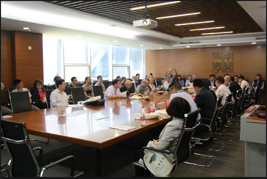
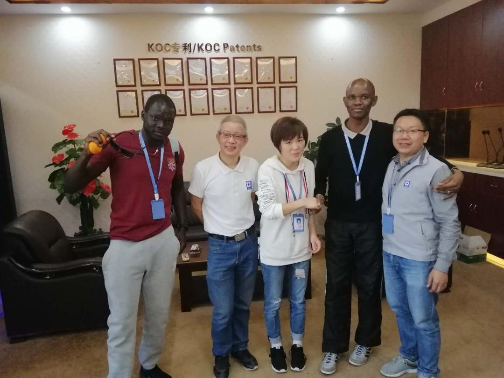

About Us
Achievements The Computer Company is an IT solutions provider. We focused exclusively on Web-based technologies and computer networking design, SamTech had experienced dramatic growth in products, services, and clients. Today, the Computer Company service and technical teams consists of over 30 business technology professionals: web/graphic designers, programmers, and technicians. The Computer Company works with clients in nearly every major category: Health Care, Medical, Insurance, Financial services, hospitality, government, nonprofit, professional services, legal, marketing, media and manufacturing..
Our Team Members
The Computer Company SamTech for ICT Solutions enables organizations to gain full advantage of IT to increase efficiencies, improve effectiveness, and reach new goals. Our Company team of highly experienced, knowledgeable technology and design professionals will work closely with you. We provide the analysis, expertise, tools, and monitoring to help you solve your toughest business challenges through IT solutions.
The services and products The Computer Company offers include:
Networking evaluation, design, and admin including healthcare and HIPAA, security, service support, disaster recovery, and CRM application operations.
Data center management including Web and e-mail services, application hosting, co-location servers, disaster management, off-site backup, and real-time replication services.
Website development: Web design, e-commerce, database, Flash and multimedia programming, Web maintenance and Web hosting
